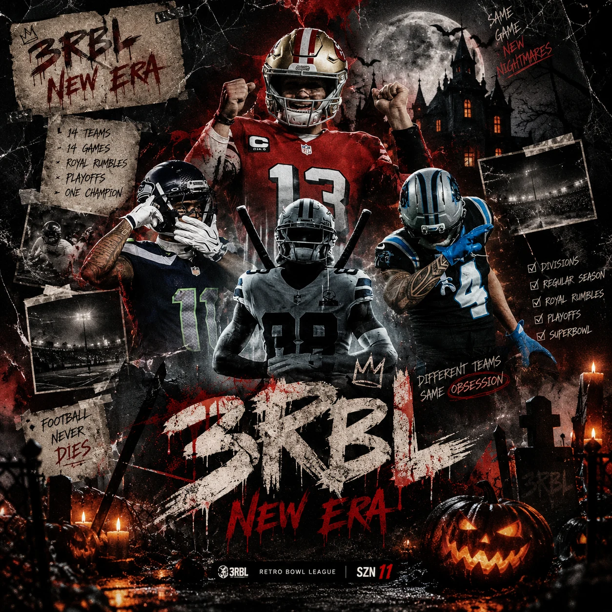

🎮 REGULAR SEASON
- Start Year: Year 2 (Roster Optional)
- Restarts: 3
- Quarter Length: 2 Minutes
- Difficulty: Medium
A living archive of standings, awards, playoff runs, Super Bowls and the stories that built the 3RBL.

Explore standings, Super Bowls, awards, playoff runs and the history behind the 3RBL.
Requirements may increase as the league grows. Get in early.